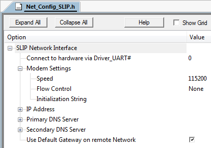

SLIP Interface Configuration
The SLIP interface is configured using the Net_Config_SLIP.h file.The options are set in the file directly or using the Configuration Wizard.

SLIP Interface Configuration File
The SLIP configuration file contains the following settings:
- Connect to hardware via Driver_UART# defines the number of the UART peripheral on the microcontroller device to be used.
- Modem Settings specifies connection parameters for the serial modem like baud rate, flow control, and an init string.
- Speed specifies the baud rate that is to be used for the UART.
- The Flow Control switch enables the usage of RTS/CTS flow control in the UART.
- Initialization String specifies a string that is to be used for modem initialization.
- IP Address specifies a static local 4 bytes IP address. The value 255.255.255.255 is not allowed.
- Primary DNS Server specifies the IP address of the primary DNS server. The DNS Client sends IP address resolution requests to this address. The setting is irrelevant if the DNS Client is disabled.
- Secondary DNS Server specifies the IP address of the secondary DNS server. It is used if the primary DNS server is down or not accessible. In this case, the DNS Client automatically switches to the secondary DNS server if a non-zero address is provided. The setting is irrelevant if the DNS Client is disabled.
- The Use Default Gateway on remote Network option applies when both Ethernet and SLIP dial-up networks are used simultaneously. If enabled, data that cannot be sent to a local LAN is forwarded to the Dial-up SLIP network instead.
IP Address Assignment
This is a simple protocol and does not allow automatic configuration, therefore only one configuration mode is supported:
- Static IP
The IP address, network mask and default gateway are configured in the Net_Config_SLIP_0.h file. It is possible to change the IP address at runtime. The static configuration specifies also a primary and (optional) secondary DNS server.
- Note
- If both SLIP and Ethernet interfaces are used simultaneously, you must not set the same network group address for both.
- All available functions for using SLIP are explained in Serial Line Internet Protocol (SLIP) section of the Reference.